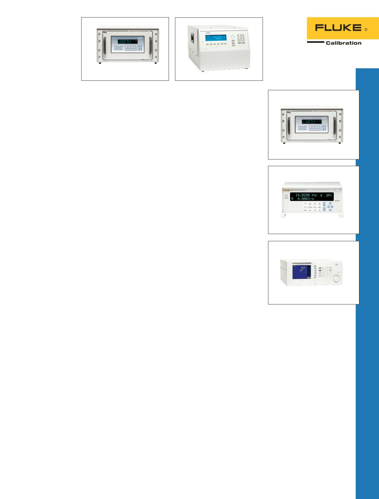

2482
FPG8601
PG9607/ PG9602
OPG1
MPG2
GPC1
3990
Spezial-Kolben-
manometer
Gaskolbenmanometer PG9607
Vollautomatische
Primärdruckreferenz für Absolut-
und Relativdrücke bis 500 kPa.
•
Relativ- und Absolutdrücke von
11 bis 500 kPa mit einem einzel-
nen Kolbenzylinder
•
Kolbenzylinder mit großem
Durchmesser von 50 mm mit
verbesserter Geometrie ermög-
licht direkte Rückführbarkeit auf
Dimensionsmessungen mit sehr
geringen Messunsicherheiten.
Gaskolbenmanometer PG9602
Automatisierte primäre
Druckreferenz für Absolut- und
Relativdrücke bis 11 MPa.
•
Relativ- und Absolutdrücke von
10 kPa bis 11 MPa
•
Bis zu 100 kg Massenlast
unter Vakuumglasglocke für
großen Turn-Down-Bereich und
Überlappung bei den Kolben/
Zylinder-Bereichen
Differenzialkolbenma-
nometer 2482
Differenzialdruckmessung mit hoher
Messgenauigkeit bei erhöhten
Leitungsdrücken.
•
Misst Differenzialdrücke unter
Verwendung eines Gas- oder
Ölmediums
•
Differenzdrücke bis 210 kPa
(30 psi, 2.100 mbar) bei einem
statischen Leitungsdruckbereich
bis 20 MPa (2.900 psi, 200 bar)
•
Schnelles und einfaches Einstel-
len von Differenzialdrücken mit
leichtgewichtigen Massen
•
Vollautomatisierte
Druckregelung und Druckbe-
stimmung unter Verwendung der
WinPrompt-Software
Kolbenmanometer mit Kraft-
waage FPG8601
Gasdruckkalibriersystem für sehr
niedrige Mess-, Differenzial- und
Absolutdrücke.
•
Gasdruck von 0 bis 15 kPa
(113 Torr) für Relativdruck,
Differenzdruck und Absolutdruck
•
Messunsicherheit bis: ± (5 mPa
+ 30 ppm des Messwerts) in den
Modi Relativdruck und Differenz-
druck, ± (8 mPa + 30 ppm des
Messwerts) im Absolutdruckmodus
•
Vollautomatischer Betrieb,
einschließlich Testausführung,
Druckregelung und Datenerfas-
sung von Prüflingen
Manuelle
Druckerzeugung
und -regelung
Gasdruckregelpaket 3990
Präzise, manuelle Absolut-
und Relativdruckregelung für
Gaskolbenmanometer und
Anzeigen.
•
Modelle von Vakuum bis 7 MPa
und 20 MPa (1.000 psi und
3.000 psi)
•
Komplett ausgestattet für
intuitive, einfache Verwendung
Hochdruck-Gasregler GPC1
Präzise, unterstützte manuelle
Regelung für Hochdruck-
Gaskolbenmanometer und
-anzeigen.
•
Modelle bis 70 MPa und 110 MPa
(10 k psi und 16 k psi)
•
Präzise Regelung über den
vollständigen Druckbereich
mit einfacher, ergonomischer
Drucktastenbedienung
Hydraulikdruckgenerator/-
Regler MPG2
Präzise, unterstützte
manuelle Regelung für
Hydraulikkolbenmanometer und
-anzeigen.
•
Modelle bis 100 MPa und
200 MPa (15 k psi und 30 k psi)
•
Komplett ausgestattet für
intuitive und einfache Erzeugung
sowie präzise Regelung von
vollem Druck
Hydraulikdruckerzeuger/-
Regler OPG1
Präzise, unterstützte
manuelle Regelung für
Hydraulikkolbenmanometer und
-anzeigen.
•
Druck bis 200 MPa (30 k psi)
•
Präzise Regelung über den
vollständigen Druckbereich
mit einfacher, ergonomischer
Drucktastenbedienung
33
Druckkalibrierung